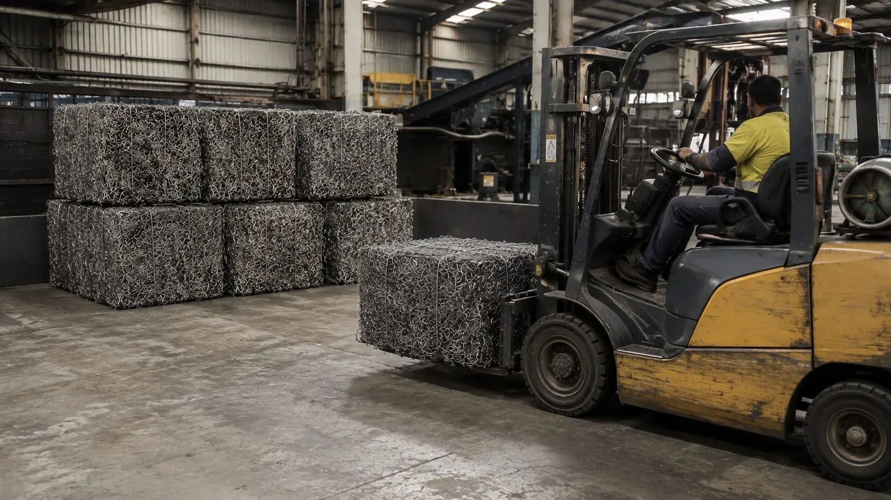
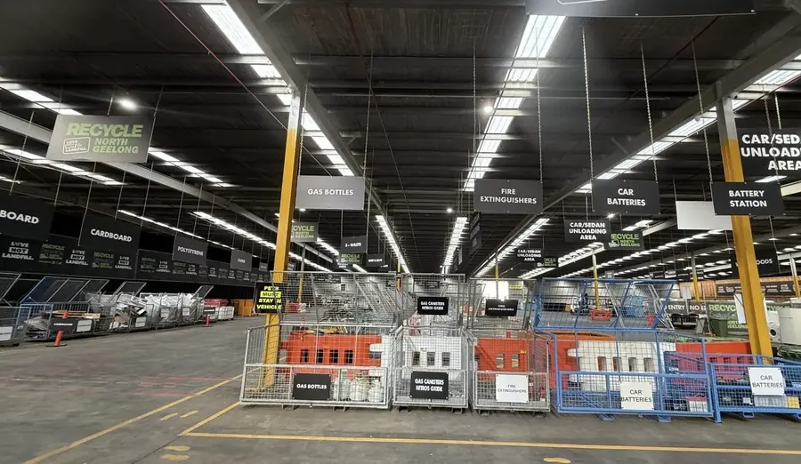
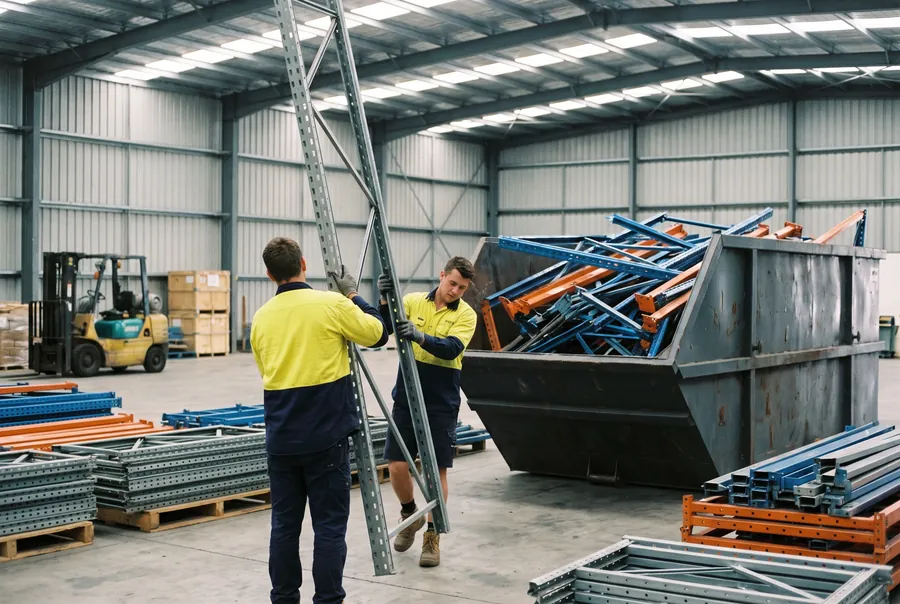
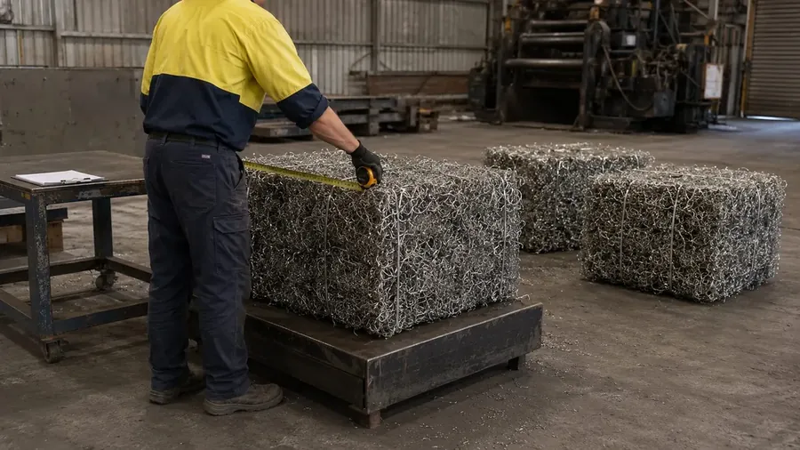
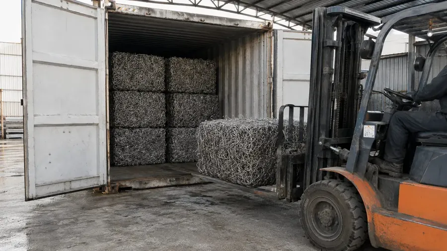
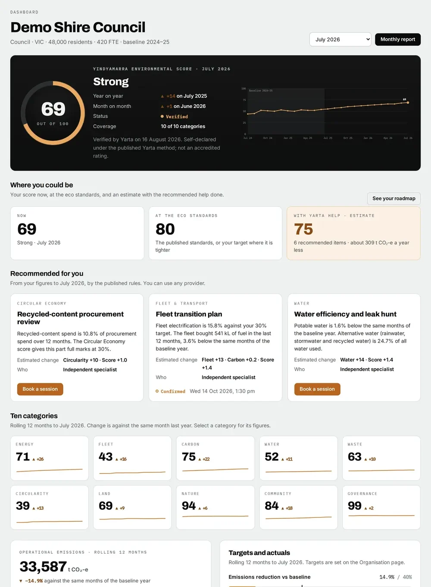

01 · Drop offUnder a tonne
Bring it to Furner Avenue.
- Recycle North Geelong, 116 Furner Avenue, North Geelong
- Clean scrap metal is no charge at the gate
- Monday to Saturday, under cover, staff on hand

Scrap metal · Geelong, Melbourne and regional Victoria
Bring it in, or we collect it. Under a tonne, drop it off at Recycle North Geelong, 116 Furner Avenue. A tonne or more, our crew collects it for one service fee, quoted before we come.
Steel, sorted and baled
01 · Drop offUnder a tonne
02 · We collectFrom one tonne
Find what we collect
766 items across 15 categories, from council depots to commercial kitchens. Search for yours, or pick a category.

Drop off · under a tonne
Unload under cover, with staff on hand to show you where it goes. No booking for a car, ute or trailer.
Collections · from one tonne
For councils, businesses, building sites, farms and institutions with a tonne or more. About twenty steel filing cabinets make a tonne.
Our crew and trucks, a bin on site or a load on the day. One service fee, quoted before we come. Nothing is booked until you approve.
Every load crosses the weighbridge. The metal is sorted, baled and recycled back into manufacturing as commodities.
A weighbridge docket for every load, and environmental reporting through YARTA, a Recycle Group initiative.

Where it goes
Recycle North Geelong is designed and purpose-built for landfill diversion. It runs under cover, six days a week, with material separated into more than 90 streams on site, ready for downstream recycling.


Backed by Recycle Group
Crux Metals is a Recycle Group business. The North Geelong site is EPA Victoria registered, and the group runs certified management systems and eCheck, its own daily safety system.
Reporting
Every vehicle is weighed in and out at the weighbridge, and each stream is weighed again before it leaves. You get a docket for every load, and your environmental reporting runs through YARTA.
Environmental reporting through YARTA Environmental Sustainability, a Recycle Group initiative.

SampleWho we collect from
Every sector with metal to move. Each one opens its full list of what we collect.
Questions
No. We don't buy scrap metal. Clean scrap metal is no charge to drop off, and collections carry one service fee, quoted before we come.
Under a tonne, drop it off at 116 Furner Avenue. A tonne or more, we collect it. About twenty steel filing cabinets make a tonne.
Not for a car, ute or trailer. We're open Monday to Saturday; call Nigel for gate times.
One service fee for the job. It depends on what it is, how much, the work on site and the distance. Nothing is booked until you approve.
Asbestos, chemicals and hazardous waste, full or hired gas cylinders, firearms and explosives, clinical waste, and anything still holding fuel or oil. See the list.